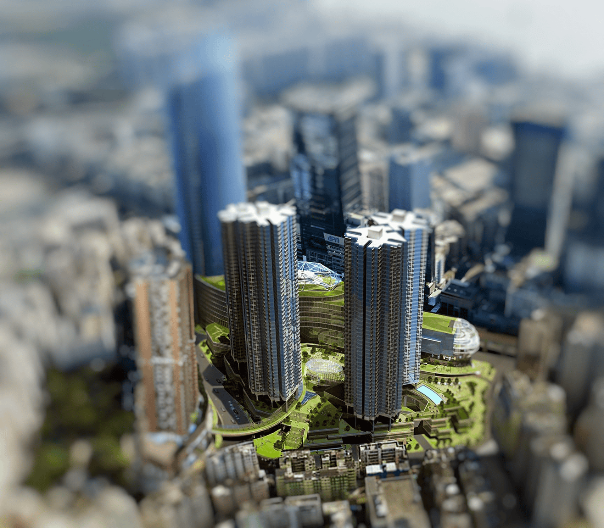

香港公立醫院長時間等待的原因

更多資訊
拔萃女書院
診所的高價收費導致許多市民轉往公立醫院就醫。東區五十萬居民僅依賴一家公立醫院，因此長時間等待已成常態。此分析深入研究香港不平均的醫院分佈情況。
診所的高價收費導致許多市民轉往公立醫院就醫。東區五十萬居民僅依賴一家公立醫院，因此長時間等待已成常態。此分析深入研究香港不平均的醫院分佈情況。

隨著香港人口的增長，住房需求日益增強。廣大的工業用地，配備完善的基礎設施，具有極大的住宅開發潛力。然而，何種條件才能確定一塊工業土地適合進行此類轉型？
面臨全球暖化的嚴峻挑戰，香港採用了創新策略。他們從交通中捕獲風能並優化電動車充電站，致力於締造更環保的未來。繼續閱讀，深入了解這些綠色創新之道！